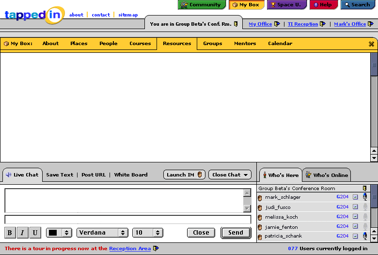
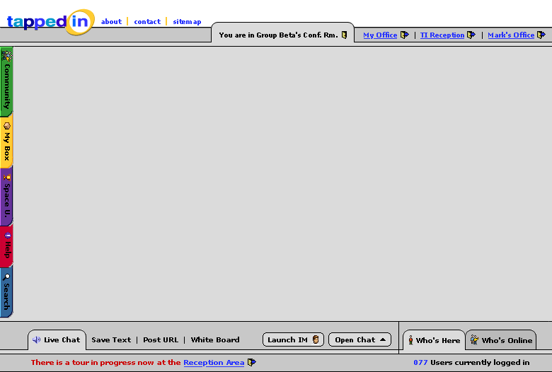

I wanted to send these off now to get initial feedback before I start spending too much time filling in the white space with content. These should be fairly self-explanatory (hopefully) and touch on the points brought up in our last brainstorming. I could also use suggestions for possible content to fill in on each of the screens (the actual body of information that the user sees on each of the pages
Regarding content for the room area... How about a template that includes at least the following
- a room drawing (customizable)
- a text description (customizable)
- a customizable (optional) URL the owner wants to make prominent
- a folder/cabinet that links to the owner/groups public documents (any files they upload, and urls they make public, etc.).
The TI crew suggests below that what appears in the room map should be the same for both the owner and visitor to be consistent. E.g., if I'm in my office and you come join me and I refer to something in my space that you don't see, that would be confusing. Anything I want to make accessible to you, I need to make public--then it will appear in my public document folder in my room, or in a search on me.
It might be nice to support editing in place for the owner (like we're doing with this tool), that is, a tiny edit button could appear next to the room drawing so that they can click it to select another drawing from a library of drawings (or upload a gif), and also by the description and homepage URL so they can update these. The public folder would update automatically as the owner clicked on items in their My Box and designated them as public.
Note to ourselves: what you see in your own office is what the public sees.
Aaron: Great job, now lets get to work....We want more visible connection between the top tabs and what actually opens. Given the technical difficulty of drawing a line or bar between the tab and the box, we are considering two options:
a. extend the tab that is clicked (yellow tab) down to the grey and extend a corresponding chunk, growth, etc up from the yellow bar at the top of the new box to give tha illusion that the two are connect behind the grey.
b. have the top tabs appear down the left side (similar to MSIE). When the tab is clicked the selected tab moves to the right slightly, so that a connected line of color goes fro mthe tab to the menu bar at the top. Zaz will draw a picture and put it in here (SEE ABOVE). We like B better!"
Nits to pick...In the Yellow, green, etc sub-tab bars, when you click on an item ,eg RESOURCES, we would like the color shade to change to hilite the current choice. We (the boss) also want it to look more tab-like with depth.\ Also, we (the boss) want the frame that comes up to convey more depth from the room to indicate that the room is behind the overlay
The images below are a result of our discussion about the MyBox, Help etc. tabs that are currently on the top of the Tapped In screen. Here is our idea about running them down the left side as described in the comment from TI crew above.
